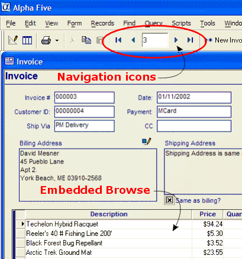
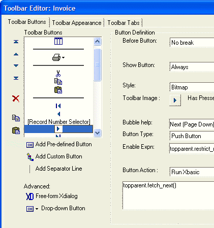
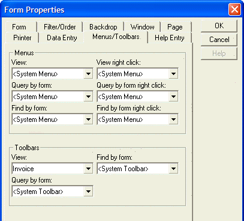

Synchronizing Form and Embedded Browse Record Navigation
When you place an embedded browse on a form, you will discover that clicking the Next Record and Previous Record icons on the toolbar produce different results, depending on whether the form or the embedded browse has focus.

You can eliminate this problem by specifying that the toolbar icons use the form as a reference for selecting first, last, next, and previous records.
The first step is to create a new toolbar. Click the Code tab of the Control Panel.
Click New > Toolbar.
Select "Form View Toolbar" and click OK to display the Toolbar Editor.

Select each of the four navigation icons and change the Button Action field to "Run Xbasic".
In the Type-In field below Button Action enter the Xbasic code to run when the icon is clicked. This will be topparent.fetch_first(), topparent.fetch_prev(), topparent.fetch_next(), and topparent.fetch_last(), depending on which icon you are editing.
Save the toolbar with a new name.
Right click your form and select Properties ... > Menus/Toolbars.

In the Toolbars View field select the name of the toolbar you just created and click OK.